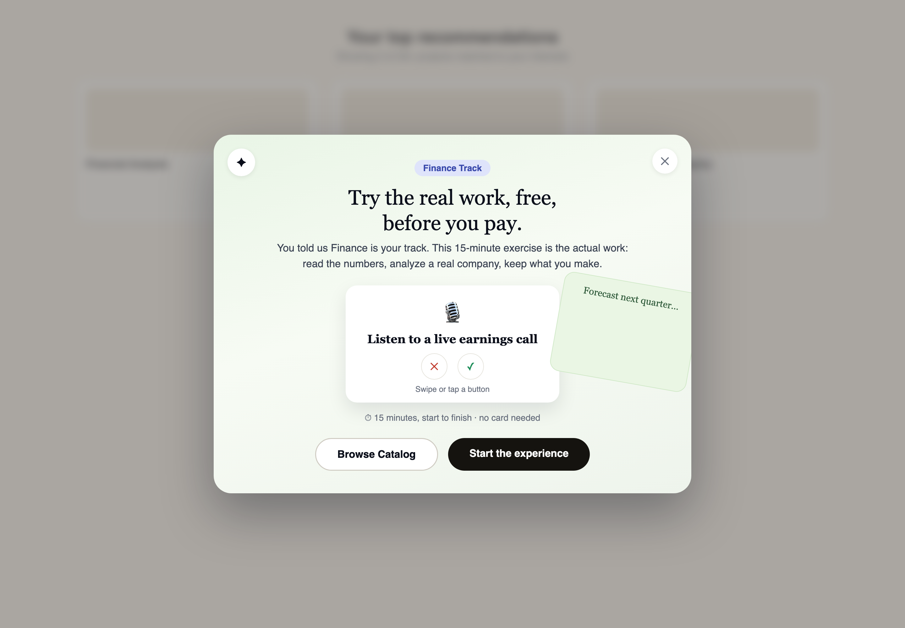
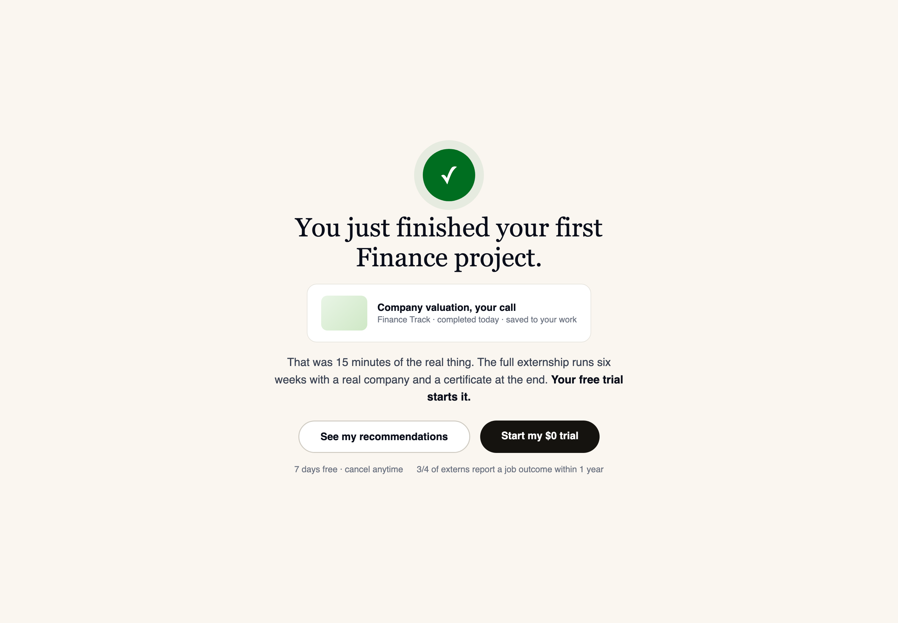
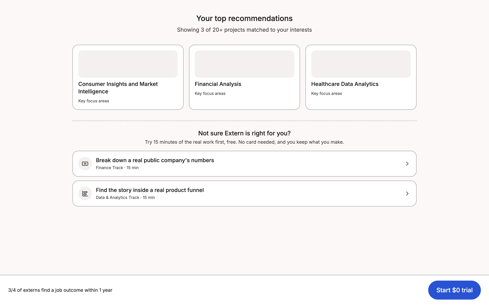
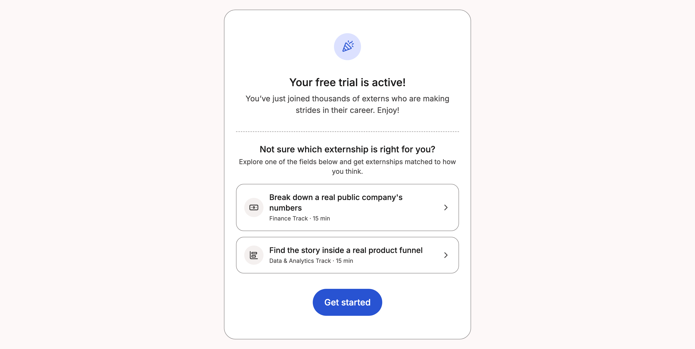
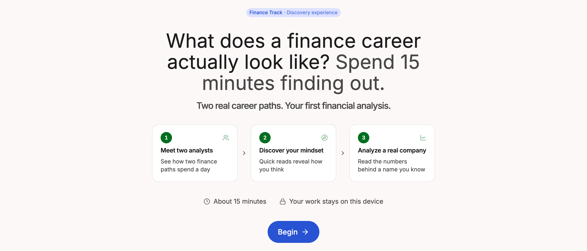
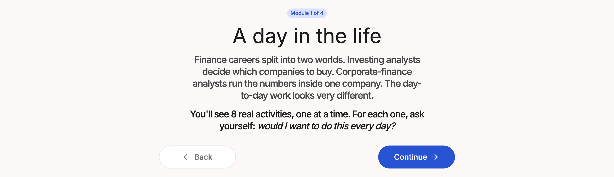
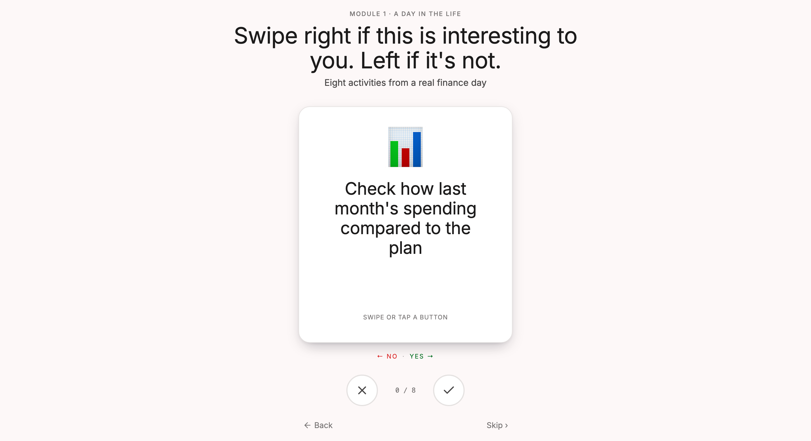
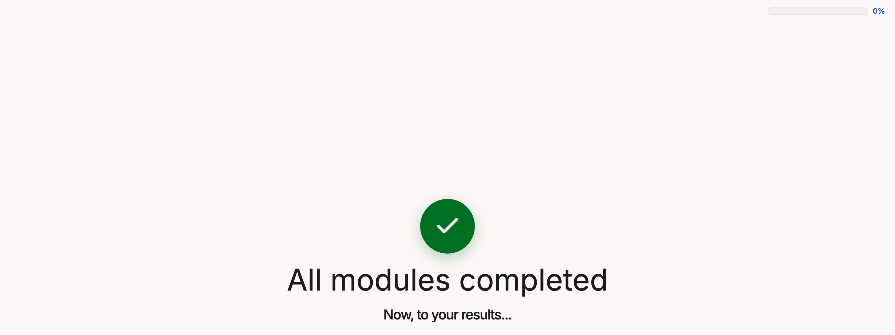
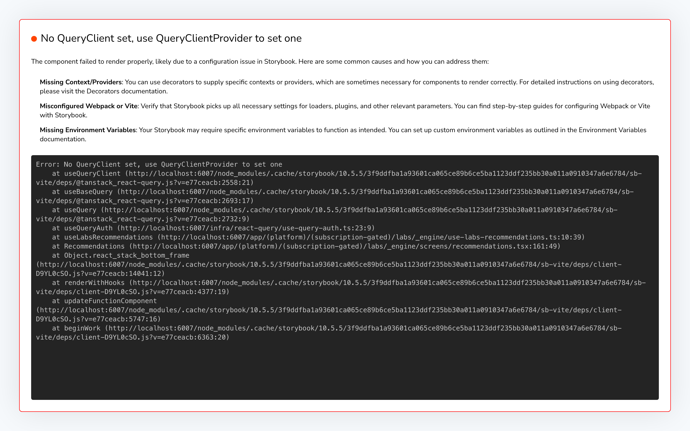

Every screenshot below is the real product, rendered from the live components in the codebase (Storybook, Finance pack). Blue-bordered screens are the Labs sprint itself, identical in both flows. Red-dashed screens are the doors the proposal deletes.
UnchangedThe Labs sprint, same in both flowsDeleted in the proposal
v2 proposal — the intent-gated overlay and the handoff (Aug 19, for Vinny's review)
Revised entry design: an overlay on the Plans page, shown ONLY to users whose questionnaire selected Finance or Data (their vertical's lab only, both if both). Dismiss lands on the normal page. The second entry stays as today's free-trial screen door, intent-gated, suppressed if the lab was already completed. The handoff screen after the lab is the conversion mechanic: the win, then the trial ask.
AThe overlay, on "Your top recommendations"intent-gated · copy per Jay's Aug 19 comments · reuses the existing overlay component

BThe post-lab handoff, pre-paywallnew screen · the conversion mechanic · design draft for Vinny

Today — two doors, then the sprint for the 26% who say yes
Registration and checkout are unchanged surfaces (not shown). These are the screens in between.
1The pre-paywall door, on /paymentinterrupts the money page · 15% enter, 4% finish · trial starts read -0.8pt · deleted in the proposal

2The checkout-success door, 8 seconds after payingthe second ask in a minute · 22% enter · deleted in the proposal

3The sprint's front dooronly the 26% who clicked a door ever see this screen

4Module 1 begins

5The real workhands-on activity, first artifact of the sprint

6The winall modules completed, ~15-30 minutes in

7The handoffexternship recommendations, matched by the sprint

What the data says about this flow: the 26% who reach screens 3-7 run 67% week-1 submission and 11.4% P1. The 74% who decline at screens 1-2 run below control. The blend is flat.
Proposed — the identical sprint becomes the trial's first step
Screens 1 and 2 are deleted. Screens 3-7 are untouched, byte-identical, and move to the front of the trial: after checkout, every trialer lands on screen 3 (with a visible "Skip to my externship"), matched to the vertical they picked at registration. The whole build is the routing between checkout and screen 3, plus instrumentation. That is why it is 2-3 tickets and reversible by flag.
Read the same screens above as the proposed flow: checkout → screen 3 (100% of trialers, skip visible) → 4 → 5 → 6 → 7 → externship home with one win on the board → Project 1 as the second ask.